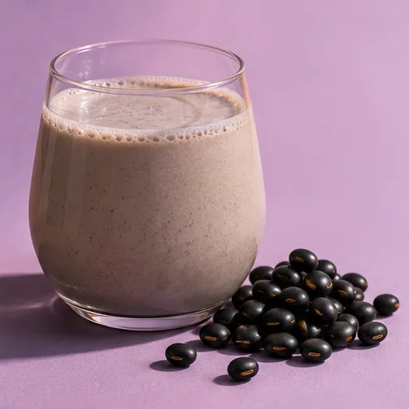

An independent tasting menu
Tasting flight.
Try a sequence of three drinks and record a note for a particular pour.
Choose a flight
The garden flight
Two floral drinks and a leaf tea.
-

Chrysanthemum Tea
A floral tea brewed with Hang Bai Ju chrysanthemums.
Write a tasting note Drink details ↗ -

First Harvest Green Tea
A green tea brewed from the first spring buds.
Write a tasting note Drink details ↗ -

Bandung Rose Milk Drink
Milk and rose essence give Bandung its creamy floral character.
Write a tasting note Drink details ↗
The bean flight
Two soy drinks with a green tea finish.
-

Soy Bean Milk
Whole soy beans give the drink its smooth texture.
Write a tasting note Drink details ↗ -

-
First Harvest Green Tea
A green tea brewed from the first spring buds.
Write a tasting note Drink details ↗
The fruit & flower flight
Lychee, rose milk and chrysanthemum.
-

-
Bandung Rose Milk Drink
Milk and rose essence give Bandung its creamy floral character.
Write a tasting note Drink details ↗ -
Chrysanthemum Tea
A floral tea brewed with Hang Bai Ju chrysanthemums.
Write a tasting note Drink details ↗